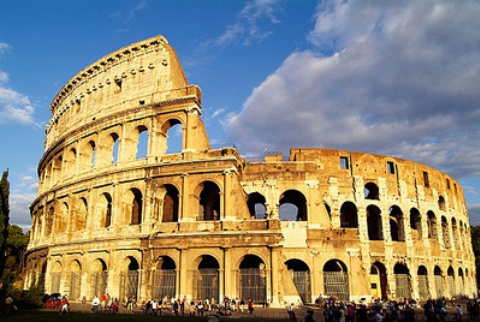

Coliseo Romano

El Coliseo o Anfiteatro Flavio (en latín Colosseum,
en italiano Colosseo)1 es un anfiteatro de la época
del Imperio romano, construido en el siglo i. Está
ubicado en el este del Foro Romano, y fue el más grande
de los que se construyeron en el Imperio romano.